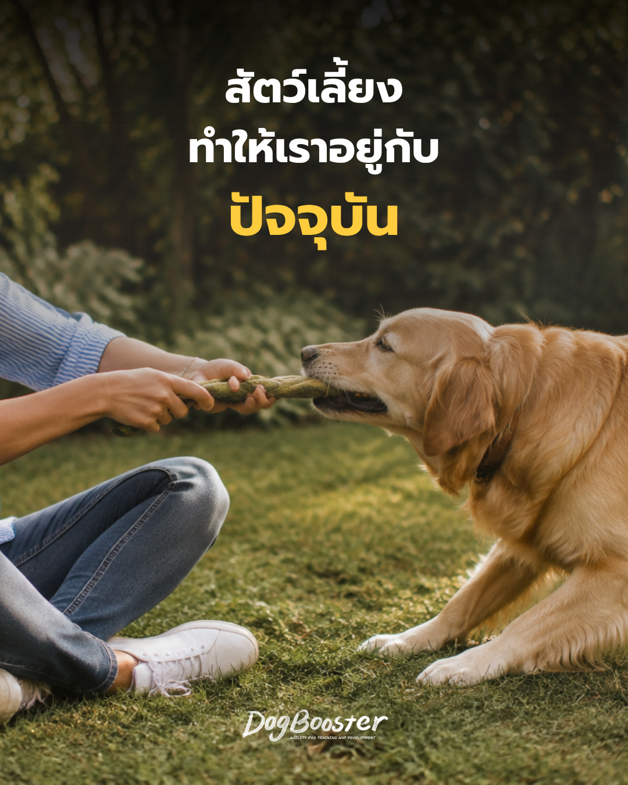

หลายคนอาจเคยมีโมเมนต์แบบนี้ — วันที่หัวยุ่งเหยิงไปหมด สมองยังวนอยู่กับอีเมลที่ยังไม่ได้ตอบหรือปัญหาที่ยังคาราคาซัง แต่พอก้มลงไปโยนของเล่นให้หมาที่บ้าน หรือแค่มองมันวิ่งไล่จับผีเสื้อในสวน จู่ ๆ ความคิดวุ่นวายในหัวก็เงียบลงไปชั่วขณะ
นี่ไม่ใช่เรื่องบังเอิญ แต่มีคำอธิบายทางพฤติกรรมศาสตร์และประสาทวิทยาที่น่าสนใจอยู่เบื้องหลัง
สุนัขเป็นสัตว์ที่ใช้ชีวิตอยู่กับ “ตอนนี้” แทบตลอดเวลา พวกมันไม่ได้กังวลเรื่องเมื่อวานหรือวางแผนพรุ่งนี้แบบมนุษย์ สิ่งที่หมาสนใจคือกลิ่นตรงหน้า เสียงที่เพิ่งได้ยิน หรือของเล่นที่กำลังจะกระเด็นมา พฤติกรรมนี้เรียกได้ว่าเป็น present-focused behavior ซึ่งเมื่อเราปฏิสัมพันธ์กับหมา สมองของเราก็มักถูกดึงให้โฟกัสตามไปด้วย เพราะการเล่นกับหมาที่ดีต้องอาศัยการอ่านสัญญาณร่างกาย จังหวะ และการตอบสนองแบบเรียลไทม์ ไม่ใช่การคิดล่วงหน้าหรือทำงานหลายอย่างพร้อมกัน
ในมุมของพฤติกรรมศาสตร์การฝึกสัตว์ แนวคิดเรื่องการฝึกแบบเกม (games-based training) ตามแนวทางของ Susan Garrett ก็สะท้อนหลักการนี้ชัดเจน เกมอย่าง Crate Games หรือ It's Yer Choice (IYC) ไม่ได้ออกแบบมาแค่เพื่อสอนคำสั่ง แต่เน้นสร้าง engagement หรือการมีส่วนร่วมระหว่างคนกับหมาแบบสองทาง ซึ่งต้องอาศัยความใส่ใจในจังหวะและการตัดสินใจของหมาแบบวินาทีต่อวินาที เจ้าของที่เล่นเกมเหล่านี้อย่างตั้งใจ จึงมักพบว่าตัวเองหลุดจากความคิดฟุ้งซ่านไปโดยอัตโนมัติ
การอยู่กับหมาไม่ได้แค่ทำให้เรา “รู้สึกดี” แบบลอย ๆ แต่มีความเชื่อมโยงกับกระบวนการทางร่างกายหลายอย่าง เช่น
สิ่งที่ควรระวังคือ ความรู้สึกสงบนี้ไม่ได้เกิดขึ้นเองอัตโนมัติเสมอไป มันขึ้นอยู่กับว่าเรา “อยู่กับหมาแบบมีสติ” จริงหรือไม่ ถ้าเราเล่นกับหมาไปพร้อมกับเลื่อนมือถือ สมองก็ยังคงทำงานหลายอย่างพร้อมกันอยู่ดี และประโยชน์ด้าน mindfulness นี้ก็จะลดลงตามไปด้วย
ในทางกลับกัน ถ้าหมาของเราดูเหมือนไม่สามารถโฟกัสหรือสงบนิ่งได้เลย ทั้งที่เจ้าของพยายามชวนเล่นแล้ว อาจเป็นสัญญาณของภาวะเครียดสะสมหรือภาวะ over-threshold (บางครั้งเรียกกันในภาษาที่เข้าใจง่ายว่า “หูดับ”) ซึ่งเป็นสภาวะที่ระบบประสาทของหมาถูกกระตุ้นมากเกินจนไม่สามารถรับรู้หรือตอบสนองต่อสิ่งรอบตัวได้ตามปกติ
หมาที่มีความเครียดเรื้อรังหรือมีประวัติเจ็บปวดทางร่างกายก็อาจแสดงพฤติกรรมกระสับกระส่าย ไม่นิ่ง หรือหลีกเลี่ยงการมีปฏิสัมพันธ์ ซึ่งต่างจาก “การอยู่กับปัจจุบันแบบผ่อนคลาย” ที่เราอยากเห็น เจ้าของจึงควรสังเกตบริบทของพฤติกรรมให้ดี ไม่ใช่ตีความทุกความกระตือรือร้นว่าเป็นเรื่องดีเสมอไป
การเลี้ยงหมาไม่ได้ให้แค่ความสุขทางใจแบบกว้าง ๆ แต่มีกลไกพฤติกรรมและประสาทวิทยาที่พอจะอธิบายได้ว่า ทำไมช่วงเวลากับหมาถึงช่วยดึงเรากลับมาอยู่กับปัจจุบัน อย่างไรก็ตาม ประโยชน์นี้จะเกิดขึ้นเต็มที่ก็ต่อเมื่อเราใส่ใจสังเกตหมาจริง ๆ และเข้าใจว่าบางครั้งหมาเองก็ต้องการพื้นที่สงบ ไม่ใช่การกระตุ้นเพิ่ม
หากคุณสังเกตเห็นว่าหมาของคุณดูเครียด ไม่นิ่ง หรือมีพฤติกรรมที่ผิดปกติเมื่อพยายามเล่นด้วย แนะนำให้ปรึกษาทีมผู้เชี่ยวชาญของ DogBooster ก่อนเริ่มโปรแกรมฝึกหรือปรับพฤติกรรมใด ๆ และหากสงสัยว่าอาจมีสาเหตุจากความเจ็บปวดทางร่างกาย ควรพาไปพบสัตวแพทย์เพื่อตรวจวินิจฉัยเพิ่มเติม